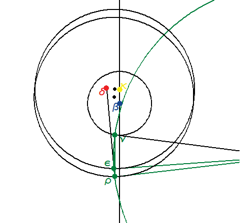

Why put ν there?Kepler says that we need to draw the circle through ε and ρ that is tangent to the circle of the earth's orbit. The point of tangency is ν. But why choose ν this way? This animation shows all the different places ν could have been, and the resulting locations of ψ, the center of the circle. Now, from Euclid, the angle subtending the arc ερ is twice as large at the center ψ as at any location on the circumference on the circle ν. Since the distance ερ is always the same, it will appear as a bigger angle εψρ when ψ is as close as possible. As you can see, the smallest circle is the one that touches the earth's orbit only once -- the tangent. At that location, the line connecting circle centers β and ψ goes directly through ν. Thus, we achieve the largest angle of difference ενρ at this tangent point. |